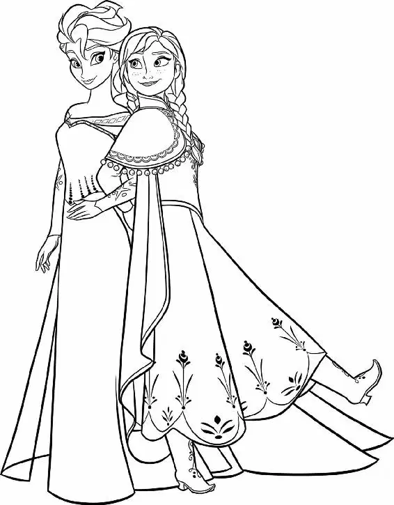

Back at the castle, the king and queen immediately ordered that the castle gates be locked. All the doors were closed and the windows shuttered. They kept the girls secluded and no longer opened the castle to visitors. The family stayed hidden, tucked away inside their walled kingdom.
The king and queen acted just as cautiously inside the castle. As the princesses grew, their parents did everything they could to ensure that Elsa learned to control herself. That meant the girls were hardly ever together. Nor did Elsa seek Anna out, since she was afraid she might accidentally hurt her. Day after day, Elsa spent most of her time training to be the next ruler — and learning to keep her powers in check.
The training was difficult, and Elsa often felt unable to contain her magic. Ice seemed to form on her fingertips whenever she laughed or cried or became upset.
Worried, the king gave Elsa a pair of leather gloves. He advised her to keep them on at all times, and reminded her that she had to hide her icy magic in order to stay safe. “Conceal it,” he told her.
“Don’t feel it,” she answered. “Don’t let it show,” he agreed.
The years slipped by. Anna spent most of her time alone. Sometimes she played with her dolls; sometimes she pretended to have conversations with painted portraits in the gallery. But she was lonely.
Time after time, she knocked on Elsa’s door, pleading with her sister to come out and play. But Elsa never did. The memory of their friendship was slowly fading.
One day, Anna peered out her window and saw snow falling in the royal gardens. She raced down the hallway to her sister’s room. “Do you want to build a snowman?” she called through the closed door.
There was no reply from inside. The door did not open. Eventually, Anna went out into the courtyard and tried to build a snowman by herself. After rolling out a lopsided ball, she glanced up at Elsa’s window and thought she saw someone smiling down at her. But when she looked again, the face was gone.
Without any memory of Elsa’s magic, Anna had no idea why she was always alone. Over time, she simply came to accept that her sister’s coldness was part of who she was. She didn’t know that Elsa was lonely too, and that she missed Anna as much as Anna missed her. Elsa longed to play with Anna but was fearful of the harm her magic might cause by mistake.
“I’m scared,” Elsa told her father one day. “It’s getting stronger.”
“Getting upset only makes it worse,” cautioned the king. “Calm down.” He reached out to give Elsa a hug.
“No,” she said sharply. “Don’t touch me.”
One day years later, when the girls were teenagers, the king and queen boarded a ship, intending to visit another kingdom. They hugged their daughters goodbye and left them at home, as they had many times before. But this time, the king and queen never returned. A storm engulfedthe ship, and they were lost at sea. The kingdom mourned their rulers.
Inside the castle, Anna felt overcome with grief. Not knowing where else to turn, she knocked again on Elsa’s door.
“Elsa? Are you okay? I’m right out here,” Anna said. But as always, there was no reply. She slid down and sadly rested her head against the door. “It’s just you and me now. What are we going to do?”
Inside her room, Elsa felt awful, too. But she could not open the door. Instead, she sat with her back against the closed door, crying silently. All around her, ice and snow filled the room.
In time, the girls became young ladies. But they had grown apart, and Anna felt she barely knew Elsa anymore.
When Elsa turned twenty-one, it was time for her to be crowned the new Queen of Arendelle. The whole kingdom was bustling with excitement. For the first time in ages, and for one day only, the castle gates would be opened to the village and to all the surrounding kingdoms.
It would be a celebration that Arendelle would never forget.
